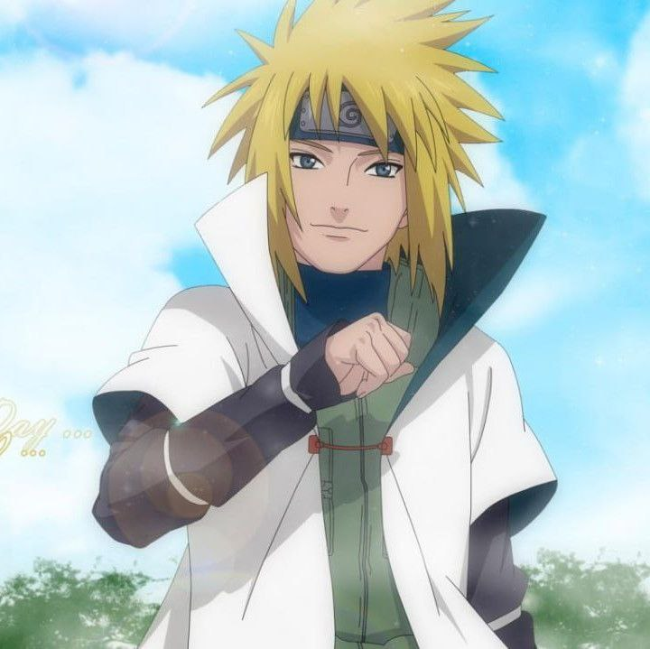

Minato Namikaze
Hokage Keempat yang disegani, dan dikenal sebagai "Kilat Kuning Konoha", penguasa yang menggetarkan alam dengan kecepatan dan ketepatan yang luar biasa.

Hokage Keempat yang disegani, dan dikenal sebagai "Kilat Kuning Konoha", penguasa yang menggetarkan alam dengan kecepatan dan ketepatan yang luar biasa.
Minato Namikaze adalah seorang pahlawan legendaris dan Hokage Keempat dari desa Konoha. Ia dikenal sebagai sosok yang luar biasa, menguasai kecepatan dan ketepatan yang tak tertandingi. Julukannya, "Kilat Kuning Konoha", menggambarkan kemampuan luar biasa yang ia miliki. Sebagai seorang Hokage, Minato memimpin dengan bijaksana dan melindungi desa dengan sepenuh hati. Ia memiliki keahlian khusus dalam menggunakan teknik segel, yang membuatnya menjadi salah satu ninja terkuat dalam sejarah Konoha. Minato juga dikenal dengan Teknik Ekor Sembilan Rasengan, serangan mematikan yang menggabungkan kekuatan fisik dan spiritual yang mampu menghancurkan lawannya
Namun, di balik ketangguhannya, Minato adalah sosok yang penuh kasih sayang. Ia adalah ayah dari Naruto Uzumaki, protagonis utama dalam serial ini, dan meninggalkan warisan yang mendalam bagi putranya. Minato memiliki tekad yang kuat untuk melindungi orang-orang yang dicintainya dan mengubah takdir menjadi yang lebih baik. Dengan kombinasi kekuatan, kecepatan, dan dedikasinya sebagai seorang Hokage, Minato Namikaze telah mencatat namanya dalam sejarah sebagai salah satu legenda terbesar Konoha. Bergabunglah dalam perjalanan epik ini dan temukan keajaiban di balik sosok Minato Namikaze, Kilat Kuning Konoha yang tak terlupakan.